bienvenidos
Decidimos dar el siguiente paso en nuestra historia y nos encantaría que estés ahí para acompañarnos.
faltan
152
DÍAS
00
HORAS
00
MINUTOS
00
SEGUNDOS
los detalles
Sábado 30 de enero de 2027
ceremonia religiosa
Templo del Carmen
16:00
Calle Eduardo Ruiz 350
Centro Histórico, Morelia
Centro Histórico, Morelia
La iglesia no tiene estacionamiento; y al ser zona centro de la ciudad, te recomendamos anticipar tu llegada para evitar contratiempos. Al entrar la novia, cerraremos las puertas para favorecer la dinámica de la ceremonia.
cómo llegar
recepción
Jardín Los Magueyes
19:00
Av. Plan de Ayala 1300
Jesús del Monte, Morelia
Jesús del Monte, Morelia
El estacionamiento está justo enfrente del salón.
cómo llegar
itinerario
16:00
Ceremonia religiosa
19:00
Cóctel de bienvenida
19:30
Fotos con los novios
20:00
Entrada de los novios
20:30
Cena
21:30

Fiesta
código de vestimenta
Etiqueta de noche
ellas
Vestido largo
ellos
Esmoquin o traje formal
La noche en Morelia enfría, considera un abrigo.
por favor
Evita el blanco y el vino
Esos dos los reservamos para la novia y para la paleta de la boda.
solo adultos
Una noche solo para grandes
Los peques de la familia son parte de nuestra historia, pero esta noche queremos que papás y mamás la vivan sin pendientes: la celebración será solo para adultos. Gracias por entenderlo.
hospedaje
Si vienes de fuera, aquí te quedas
estacionamiento
En la recepción, justo enfrente del salón. Para la ceremonia toma en cuenta que la iglesia no tiene estacionamiento propio.
aeropuerto
[Morelia (MLM) está a X min. Vuelos directos desde CDMX, Tijuana y Houston.]
galería
mesa de regalos
Tu presencia es el regalo
Si además quieres consentirnos, aquí te dejamos algunas opciones.
Liverpool · evento 60035839
confirma tu asistencia
Nos vemos el 30 de enero
Te pedimos confirmar antes del 25 de noviembre de 2026 para poder apartar tu lugar.
gracias, ya quedó
Nos va a dar mucho gusto verte. Nos vemos el 30 de enero en Morelia.